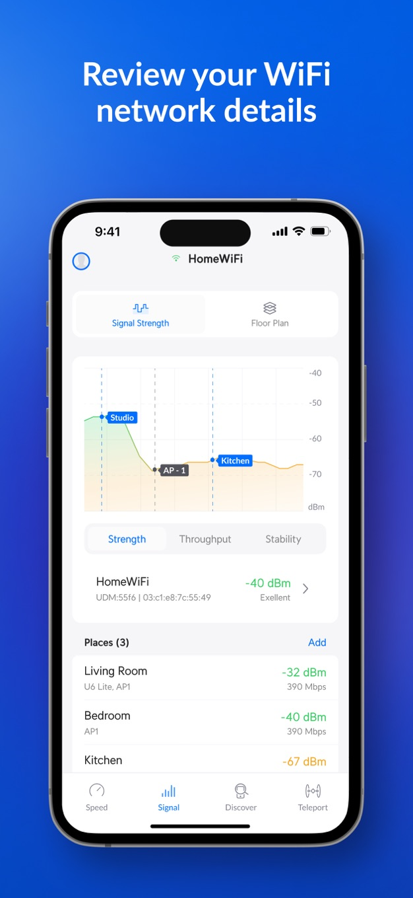
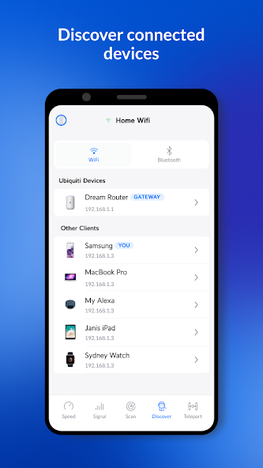

WiFiman 快问快答：测速、信号、远程一把抓的网络诊断工具
整理了关于 WiFiman 最常被问到的九个问题——它是什么、谁该装、Teleport 远程怎么开、信号数字怎么看、桌面版值不值得装，一口气答完。
整理一篇关于 WiFiman 的快问快答，九个问题把这款 Ubiquiti 出品的网络诊断工具讲透。
WiFiman 到底是什么？
一句话：网络诊断工具箱 + 远程回家的钥匙。它的官网上写得清楚，这是 Ubiquiti 做的免费 App，手机端功能最全，桌面端是轻量版。核心就三块——测网速、看信号、连 Teleport 远程回家。没有广告，不用注册，打开就能用。
谁适合装？家里有 UniFi 设备的肯定第一优先级，但就算你用的是其他品牌路由器，测速和信号扫描照样能用，这两块不挑硬件。
装在哪？手机版和桌面版差多少？
手机版有 iOS 和 Android，直接从下载页拿就行，桌面版覆盖 Windows、macOS、Linux——三端都免费。桌面版不是手机版的复刻，是轻量版：它只保证设备发现和 Teleport 两大核心，测速和信号页是 1.2.x 系列后来补上的，但整体功能仍比移动端少一半以上。
桌面版适合主力机在电脑上、需要长会话 Teleport 的人——iOS 有后台限制，手机连 Teleport 只能短会话，长连接需求放电脑上更稳。如果你只是偶尔测个速，手机版完全够用。
Teleport 远程回家怎么开？
Teleport 是「家里网关 + 外出设备」两端配合的功能，家里那端要有 UniFi 网关（Cloud Gateway / UDM 一类运行 UniFi OS 的主机）。
开启步骤：进 UniFi 网络应用的管理界面（手机 App 或网页控制器都行），打开 Settings → VPN → Teleport 开关，然后生成一条邀请链接或二维码。
邀请有两条硬规则要记住——有效期 24 小时、一条只能被一台设备使用。给谁用就现发现用，别把链接留在聊天记录里过夜，它就是一张临时门票。
外出设备怎么连？
在外出设备上装好 WiFiman，直接点开邀请链接就行——App 会自动识别邀请、把 Teleport 配置写入，不需要手动填服务器地址或密钥。iOS 首次连接会弹系统级 VPN 授权，允许即可。
日常使用就是一个按钮：切到 Teleport 标签页，点连接开关，状态灯变绿就到家了。此时手机的所有流量按隧道策略走家里网络，浏览器直接输入家里 NAS、摄像头、路由器后台的内网地址就能访问，体验和在家一模一样。
连不上怎么办？先别重装
一键连接失败的常见原因有明确清单：蜂窝网络下的 IPv6 兼容问题、iOS 后台保活限制、网关侧没开启 Teleport 等等。绝大多数情况翻一下WiFiman 文档对照排查就能解决，不用急着重装应用。桌面端 1.2.x 系列迭代过几轮 Teleport 稳定性修复，连接表现以最新版为准。
信号页上那个负数是什么意思？
那个带负号的数字叫 RSSI，单位 dBm。记住一条规则：RSSI 是负数，越接近 0 越好。-40 比 -60 强，-90 基本不可用。它是对数刻度，相差 10 dBm 实际功率差约十倍——从 -50 掉到 -70 看似只掉了 20，链路质量已经是天壤之别。

分区间对照：-30 到 -50 是极好（贴近 AP，能跑满上限速率）；-50 到 -60 很好（4K 流媒体、视频会议都稳）；-60 到 -70 尚可（日常浏览和高清视频没问题）；-70 到 -80 开始弱，可用性下限；低于 -90 基本不可用。
实用达标线：全屋覆盖至少做到 -65 dBm 以上；对延迟敏感的用途（游戏、会议）争取 -60 dBm 以内。读数受设备天线影响，同一位置不同手机差几 dB 属正常，对比时尽量用同一台设备。
信号不理想怎么改善？
改善顺序是这样的：先挪位置——AP 架高、居中、别塞进弱电箱，这比任何设置都立竿见影；躲开干扰源——微波炉、无线键盘底座、蓝牙设备堆都压 2.4 GHz，金属柜、镜子、水族箱是信号黑洞；再调信道——信号够但速率上不去时多半是信道挤；最后才是补点，大面积或多层户型靠加 AP 或 Mesh 节点解决。
测速结果怎么解读？
测速页跑一次就能拿到当前网络的上下行速率和延迟。连着 Teleport 时跑测速，结果反映的是「当前位置 → 家里宽带」的全程质量，可以用来评估两地线路。测速完顺手用 Discover 页看家里设备谁在线，配合 Network Latency 确认外出体验。

WiFiman 和同类工具比怎么样？
市面上的 WiFi 分析工具不少，但 WiFiman 有两个独特点：一是它和 UniFi 生态的深度整合——Discovery 页能直接识别网关并一键进入 Teleport，不用手动填任何参数；二是全功能免费，没有内购、没有广告，移动端该有的都给了。
当然也有局限：信号分析和测速不挑路由器，但 Teleport 远程回家这一套只能配合 UniFi 网关使用，非 UniFi 用户用不了这个功能。桌面版功能比手机版少，这也得提前有预期。
值不值得装？
如果你家里有 UniFi 设备，WiFiman 几乎是必装——Teleport 远程回家是真正能替代 VPN 的零配置方案，测速和信号诊断也比系统自带的详细得多。即便你没有 UniFi，当成一个纯粹的 WiFi 诊断工具用也完全够格，免费、干净、不折腾。唯一要注意的是 Teleport 的邀请规则和桌面版的轻量定位，别抱着手机版全功能复刻的期待去装桌面版就行。
最后一句：有 UniFi 就闭眼装，没有也装一个当备用诊断工具，反正免费不占空间。